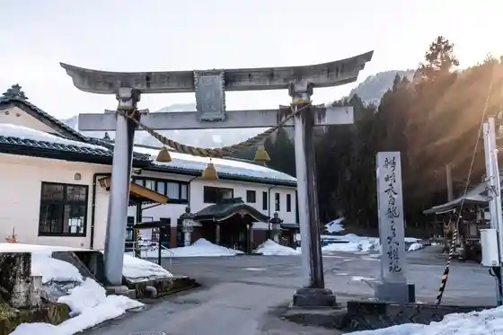
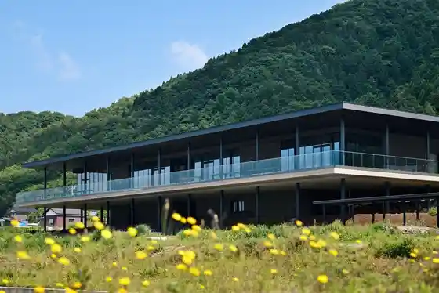
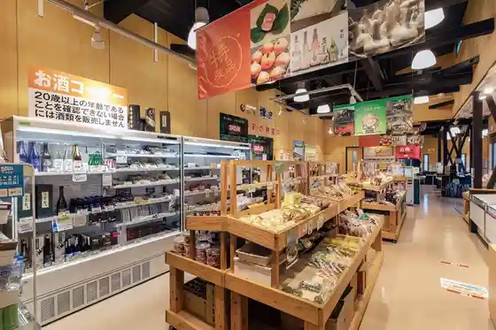
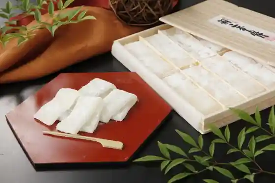

Omoto Yama Eiheiji
Eiheiji, Fukui · 0776-63-3102 · Official / source link
Benzaiten Hakuryu O Taiken Gen
Eiheiji, Fukui · 0776-64-2566 · Official / source link

ESHIKOTO
Eiheiji, Fukui · 0776-63-1030 · Official / source link

Roadside Station (Zen Village)
Eiheiji, Fukui · Official / source link

Habutae Mochi no Furusato Maedaseika
Eiheiji, Fukui · 0776-61-2100 · Official / source link

Eiheiji Oya Zen no Yado Hakuju Kan
Eiheiji, Fukui · 0776-63-1188 · Official / source link
Robai Yama Yoshimine Tera
Eiheiji, Fukui · 0776-64-2536 · Official / source link
Eiheiji Miryoku Hasshin Koryu Shisetsu Ei Bo Kan
Eiheiji, Fukui · Official / source link
Eiheiji Tourist Information
Eiheiji, Fukui · 0776-63-3727 · Official / source link
Echizen Tetsudo Eiheiji Kuchi Eki
Eiheiji, Fukui · 0120-840-508 · Official / source link
Eiheiji Onsen Zen Village
Eiheiji, Fukui · 0776-64-3510 · Official / source link
Nama Habutae Mochi Mujin Chokubai Tokoro
Eiheiji, Fukui · 0776-61-2100 · Official / source link
Eiheiji Midori no Village Fureai Center
Eiheiji, Fukui · 0776-63-4222 · Official / source link
Jakko En
Eiheiji, Fukui · Official / source link
Rentasaikuru - Eiheiji - Echizen Tetsudo Eiheiji Kuchi Eki
Eiheiji, Fukui · Official / source link
Hokkyo So
Eiheiji, Fukui · 0776-63-3311 · Official / source link
Shihi Senkoku Magai Hotoke
Eiheiji, Fukui · Official / source link
Kuzuryu Kawa Museum Wakuwaku RiverCAN
Eiheiji, Fukui · 0776-63-7100 · Official / source link
Shinfonii Yoshida Shuzo Yoshimine Kura Chokueiten Marushie Satoru
Eiheiji, Fukui · 0776-63-5499 · Official / source link
Matsuoka Juni Magari
Eiheiji, Fukui · 0776-61-3400 · Official / source link
Kamishihi Culture Hall Sansanhoru
Eiheiji, Fukui · 0776-64-3170 · Official / source link
Eiheiji Dam
Eiheiji, Fukui · Official / source link
Tenryu Tera (Soto Shu Seiryo Yama Tenryu Tera)
Eiheiji, Fukui · 0776-61-0471 · Official / source link
Mingei Kogeihin Kyodo Sanhin Ozeki
Eiheiji, Fukui · 0776-63-3131 · Official / source link
(Basho Tsuka) Tenryu Tera Keidai
Eiheiji, Fukui · 0776-61-0471 · Official / source link
Omiyage Nakamura
Eiheiji, Fukui · 0776-63-3035 · Official / source link
Omiyage Saka
Eiheiji, Fukui · 0776-63-3097 · Official / source link
Matsuoka River Park
Eiheiji, Fukui · 0776-61-3400 · Official / source link
Kogyo Tera Shinshu Mirai Kan MUSEUM Hana no Kura
Eiheiji, Fukui · 0776-64-2707 · Official / source link
Yamakawa Ya
Eiheiji, Fukui · 0776-63-3029 · Official / source link
Matsuoka Park
Eiheiji, Fukui · 0776-61-3948 · Official / source link
Wakuwaku River CAN (Kuzuryu Senryu Iki Bosai Center)
Eiheiji, Fukui · 0776-63-7100 · Official / source link
Arakawa no Hotaru (Yoshino Chiku)
Eiheiji, Fukui · Official / source link
Daibutsu Terayama
Eiheiji, Fukui · Official / source link
Goto
Eiheiji, Fukui · 0776-63-3007 · Official / source link
Joboji Yama (Chi Suberi Chosa Niyori Heisachu)
Eiheiji, Fukui · 0776-61-3921 · Official / source link
Eiheiji Town Hall
Eiheiji, Fukui · 0776-61-1111 · Official / source link